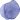

师大春天幼儿园根据国家颁布的幼儿教育方面的纲要和指南，积极探索符合中国国情、面向未来、科学化的幼教理念和实践模式。
幼儿课程方案的设计和实施秉承创建者提出的"关心今天、关注明天"的核心价值观和"适应性教育"的理念。
适应儿童——尊重成长规律、关注天赋差异、呵护童心童趣；适应自然——适应自然环境、增强生存能力、探索自然奥秘；适应社会——形成社会认知、感受社会文明、实践社会生活；适应未来——注重奠定基础、探索未来需求、关注个体特征。
同时体现了"发现•生存•博爱•合作"的八字园训。
课程方案的设计受到各种儿童发展理论和幼儿教育理论的影响，但最主要是基于1983年美国哈佛大学教育研究院的加德纳教授(Harward Gardener)提出了多元智能理论，颠覆了人们对智能的认识和意大利著名的瑞吉欧教育体系方案教学理论。一个世界公认的最优秀和先进的教育体系之一。方案教学是该教育体系中课程与教学关系最集中的体现。
| 基础性 | 原理性 | 综合性 |
| 个体性 | 未来性 | 渗透性 |
| 发展性 |
本园课程方案的课程结构大致包括基础课程、选择课程、资源课程和辅助课程四个部分。
1.基础课程：生活、运动、学习、游戏
2.本园设置了选择课程。选择课程具体安排在我园的科学探究坊、社会体验坊、生活实践坊、美工创意坊、体育竞技坊、感统训练坊、舞蹈教室、动物饲养区、植物栽培区等区域中。